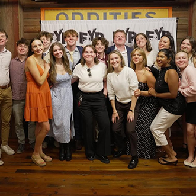
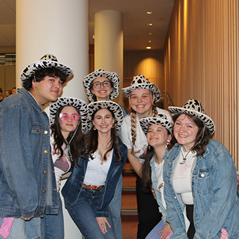
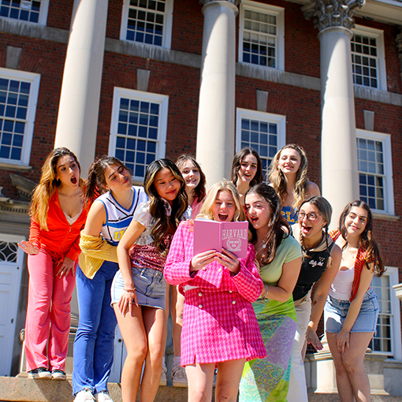

About First Year Players
First Year Players (FYP) is Syracuse University’s largest student-run organization, dedicated to giving first-year and transfer students the chance to perform in a musical. Each year, the group comes together to create unforgettable performances and lasting memories, all while building a strong community of non-drama students passionate about theatre.
  Founded in 1992, FYP has become one of SU’s most beloved traditions. Our organization is unique in its ability to produce an annual musical production while stimulating bonding between older members of the organization, called staff. Every fall and spring semester, our members collaborate to produce events that showcase creativity, teamwork, and the FYP spirit.
Through FYP, students don’t just perform. They form lifelong friendships, develop leadership skills, and become part of a family that extends long beyond the first year.
Learn More
Want to learn more? Explore what we do in the Fall Semester and the Spring Semester to see what makes FYP such a special part of campus life.